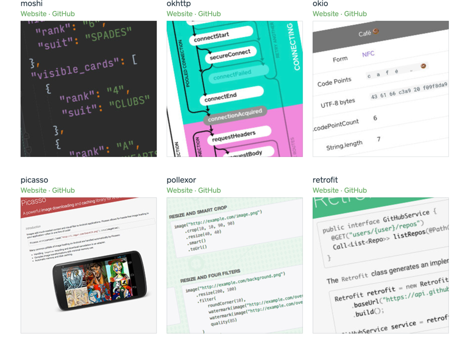
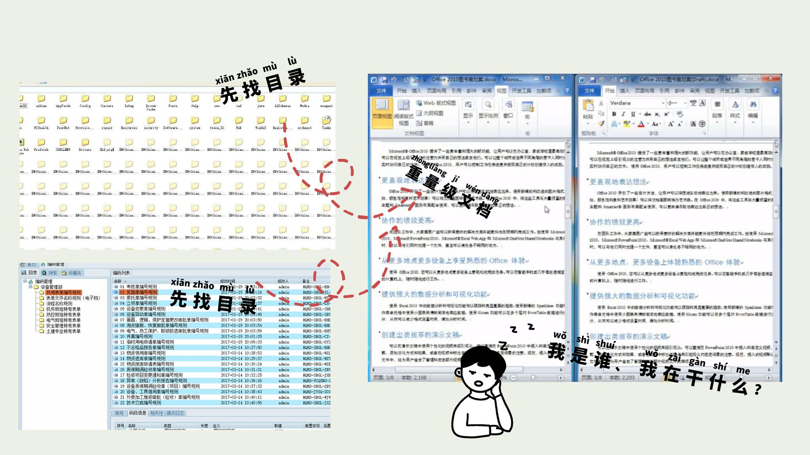
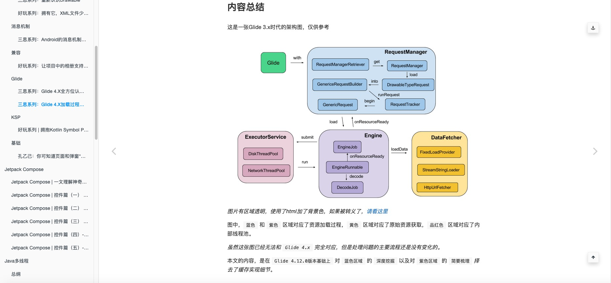
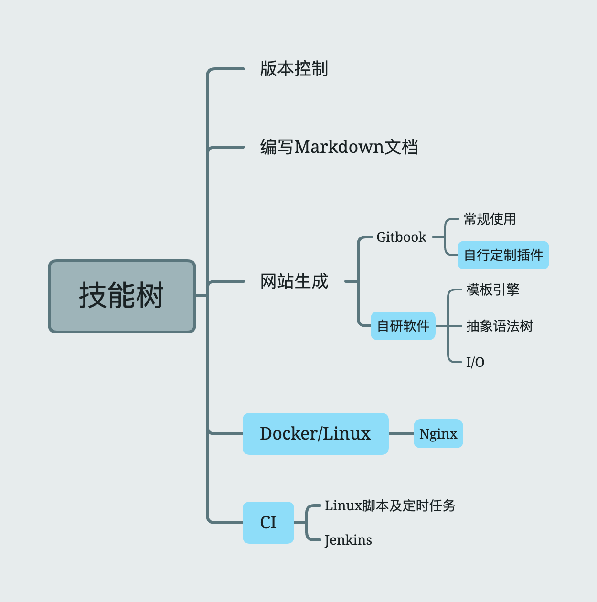
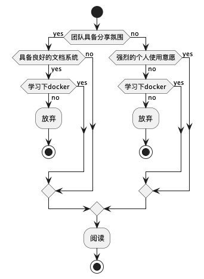

初体验：动手搭建"小清新式"局域网文档系统
您所在的团队是否拥有良好的文档分享氛围？文档是否方便查询和阅读？更新文档是否非常繁琐？
想象一下，如果您所在的团队拥有这样一套项目文档网站，是否 项目的长期维护会很轻松 ？
就像Square公司的开源项目,通过聚合页引导至不同的项目 ：

每个项目又拥有主题分明、聚合于目录导航下的网页文档，例如：
诚然，通过 Github.IO 及类似方式，可以较为简单的部署一套在线静态文档网站。
但公司项目文档并不适合对外公开，您是否想在公司局域网范围内，自己动手搭建一套用于
版本控制、自动部署、持续集成的网页文档呢？
以往的繁琐 与 如今的简明

曾经，我像图中这样，在本地或EDM软件维护文档空间，经历繁琐地检索、排查找到文档，再进行分享、阅读。

而现在，我习惯像这样，访问网页，通过不超过3级的目录，直接定位到文档内容，进行阅读
实现思路
核心思路：对重点内容编写轻量级文档，并以某种便于查找的索引方式聚合文档内容，将其托管于方便访问的网站。
典型的方式：
- 使用Markdown形式的轻量级文档，撰写重点内容，每一篇都主题鲜明
- 按照主题与项目模块的之间的关系、主题之间的关联性，组织目录结构，形成 "索引"
- 是用Gitbook、博客生成器等软件，将其制作成静态网站
- 部署静态网站
在此基础上，再加上自动部署、版本控制
涉及到的技能树，其中蓝色高亮部分一般能让人眼前一亮：

判断是否需要继续阅读
可能您已经 满怀期待 地准备开始跟随博客 展开实践，但出于责任心，我建议您结合下述 流程图 和 参考经历 判断下 是否真的需要继续 。
如果您已经确定要了解笔者是如何实现这一系统的，可以直接进入下一个章节

供参考的例子
A公司
背景：
- 研发团队百人规模，4-5条业务线，业务线之间存在一定数量的人员共享（例如移动端，web端后端救火队员）
- 业务线之间有（业务、技术）交流，流动人员需要接入、交出
- 除去服务端接口文档（YApi or Swagger），项目设计类文档一般托管于
Confluence
团队有强烈的 "基于文档交流、存档备份、查阅回顾、知识转移" 的需求 ， 有分享氛围
遇到的典型困难：
- 当不熟悉文档空间时，查找的难度大
- 维护文档空间内容索引难
B公司
背景：
- 业务线独立，互不干涉，基本没有技术沟通（私下的交流除外）
- 业务线研发团队30-40人规模
- 技术资料无明确要求
仅在小组范围内存在 "碎片化" 的文档材料，可能托管于印象笔记、可能托管于项目代码库，可能在某电脑中
典型困难：
- 聊胜于无，最终基本以查代码解决问题
C公司
背景：
- 涉足医疗行业
- 文档等资料的编写和管理发行遵照法规条款，受各种部门监管
- 使用EDM系统
典型困难：
- 各种文档的出发点契合法规需求，内容不一定满足研发人员的诉求（例如：往往我们需要详尽的类图、活动图、时序图、状态图、组件及对象生命周期关系，但文档一般只从系统角度给出程序流程图）
- 针对"查询设计细节点"而言，存在大量的内容噪声信息
- 文档空间大、内容多、检索难度高
从上述的三个案例来看，主要矛盾是文档内容不契合使用者诉求。
文档系统难用是次要矛盾。
在公司推行这一方案时，首先要确定主要矛盾能被解决，即团队愿意编写、维护一系列的文档（或内容资料）。 当团队拥有这些长期维护的文档、资料时，就可以着手解决系统不好用的问题。
否则不能有效推行，那此时只能退而求其次，尝试掌握额外的技能。
开始动手
明确环境
按照我们的目标，可以确定，我们需要以下必要环境：
- 一个局域网，不能有AP隔离、网段不能访问隔离（即设备间可以互相访问）
- 一台部署文档服务的机器
- 多台访问设备
作者按：如果您已经开始在公司正式开始推行，大概率会申请到一台Linux虚机或者Docker；小范围尝试时，可能是使用自己的办公电脑，一般是Windows or macOS系统，Linux概率较低。
作者手边有一台 macOS10.15.7的机器，下文所有内容均以此版本为背景，注意：不同的操作系统可能会遇到不同的问题。
接下来我们需要搞定以下软件环境，注意目前处于macOS 10.15.7环境下
- Gitlab 服务 及账号（至少具备创建、读取、提交项目的权限），版本无特定要求，用公司现成的即可
- Docker 4.7.0 (77141)，未调查版本特定要求，该版本已确定可用，较新
- Docker-ubuntu 镜像，未调查版本特定要求，可使用最新版本
- Gitbook 3.2.3, 版本无特定要求，用于生成Gitbook，结合需求选用版本
Docker
接下来我们开始安装Docker，并从基本镜像开始搭建静态网站
安装
首先下载 并安装Docker，这一步基本不会遇到问题
安装完成后，通过 docker version 命令，可以获得docker各个模块的版本信息
获取ubuntu镜像
docker image pull ubuntu:latest
以上命令可以获取官方镜像仓库中的最新的Ubuntu镜像
生成容器
docker run -p 80:80 --name doc -i -t ubuntu /bin/bash
通过以上命令可以 基于ubuntu镜像 得到一个 名为 doc 的容器 ，映射本机80端口和容器的80端口，可使用bash。
docker run [OPTIONS] IMAGE [COMMAND] [ARG...]
docker run 等价于 docker container run，在docker的迭代中，功能越来越多，增加了分组
注意：我在第一次体验docker时，没有处理好端口映射（随机端口分配），带来了很多问题，后面会给出专门的解决方案。
读者朋友可以结合以下内容做一些尝试，体会下各种功能
常用选项说明：
- -d, --detach=false， 指定容器运行于前台还是后台，默认为false
- -i, --interactive=false， 打开STDIN，用于控制台交互
- -t, --tty=false， 分配tty设备，该可以支持终端登录，默认为false
- -u, --user=""， 指定容器的用户
- -a, --attach=[]， 登录容器（必须是以docker run -d启动的容器）
- -w, --workdir=""， 指定容器的工作目录
- -c, --cpu-shares=0， 设置容器CPU权重，在CPU共享场景使用
- -e, --env=[]， 指定环境变量，容器中可以使用该环境变量
- -m, --memory=""， 指定容器的内存上限
- -P, --publish-all=false， 指定容器暴露的端口
- -p, --publish=[]， 指定容器暴露的端口
- -h, --hostname=""， 指定容器的主机名
- -v, --volume=[]， 给容器挂载存储卷，挂载到容器的某个目录
- --volumes-from=[]， 给容器挂载其他容器上的卷，挂载到容器的某个目录
- --cap-add=[]， 添加权限，权限清单详见：http://linux.die.net/man/7/capabilities
- --cap-drop=[]， 删除权限，权限清单详见：http://linux.die.net/man/7/capabilities
- --cidfile=""， 运行容器后，在指定文件中写入容器PID值，一种典型的监控系统用法
- --cpuset=""， 设置容器可以使用哪些CPU，此参数可以用来容器独占CPU
- --device=[]， 添加主机设备给容器，相当于设备直通
- --dns=[]， 指定容器的dns服务器
- --dns-search=[]， 指定容器的dns搜索域名，写入到容器的/etc/resolv.conf文件
- --entrypoint=""， 覆盖image的入口点
- --env-file=[]， 指定环境变量文件，文件格式为每行一个环境变量
- --expose=[]， 指定容器暴露的端口，即修改镜像的暴露端口
- --link=[]， 指定容器间的关联，使用其他容器的IP、env等信息
- --lxc-conf=[]， 指定容器的配置文件，只有在指定--exec-driver=lxc时使用
- --name=""， 指定容器名字，后续可以通过名字进行容器管理，links特性需要使用名字
- --net="bridge"， 容器网络设置:
- bridge 使用docker daemon指定的网桥
- host //容器使用主机的网络
- container:NAME_or_ID >//使用其他容器的网路，共享IP和PORT等网络资源
- none 容器使用自己的网络（类似--net=bridge），但是不进行配置
- --privileged=false， 指定容器是否为特权容器，特权容器拥有所有的capabilities
- --restart="no"， 指定容器停止后的重启策略:
- no：容器退出时不重启
- on-failure：容器故障退出（返回值非零）时重启
- always：容器退出时总是重启
- --rm=false， 指定容器停止后自动删除容器(不支持以docker run -d启动的容器)
- --sig-proxy=true， 设置由代理接受并处理信号，但是SIGCHLD、SIGSTOP和SIGKILL不能被代理
为容器内的APP安装nginx
通过nginx可以很方便的代理静态站点，已经基于Ubuntu镜像，所以可以通过apt进行各类软件安装
先更新apt的资源，如果源出现问题，可以自行换源
apt-get update
安装nginx
apt-get install -y nginx
此处的过程一般不会出现问题
为容器内的APP安装Vim
因为是通过终端操作，Vim是必须的。
值得注意的是,docker中使用vim只能使用最基本的指令，需要适应
apt-get install -y vim
修改nginx配置
此时，您可以先确定好静态网站内容的存放文件目录，笔者将其托管于Gitlab，并clone到了docker 容器中.
apt-get install git安装git
通过 whereis 命令找到nginx的安装位置 whereis nginx ，按照惯例：/etc 下存放配置文件，/sbin、/bin下是可执行文件
进入配置文件目录，使用VIM修改 default 文件内容
修改 root 配置，指定为静态网站根目录。
例如：
##
# You should look at the following URL's in order to grasp a solid understanding
# ... 注释内容移除
##
# Default server configuration
#
server {
listen 80 default_server;
listen [::]:80 default_server;
root /usr/local/work/doc/_book;
server_name _;
location / {
# First attempt to serve request as file, then
# as directory, then fall back to displaying a 404.
try_files $uri $uri/ =404;
}
}
保存。
输入 nginx 启动nginx ，理论上环境变量已完善，若出现问题可自行配置环境变量
输入 ps -ef 可查看进程，确保nginx已经启动
确认端口映射
进入mac的Terminal，可以新建也可以退出docker的交互式容器
按序按ctrl+p,ctrl+q 可退出交互式容器
使用 docker ps 命令查看运行中的容器的端口映射情况。 docker ps -a 可以查看全部容器的情况。
使用 docker port "容器名" 命令可以查看 容器内部端口 到 docker容器在mac上分配的端口
例如，上文中我们将80端口分配给静态网站，称之容器内部端口。而此docker容器运行一个依托于mac真机的虚拟平台上，mac真机为其分配了一个端口。
如果创建容器时没有指定端口或者启动时获取端口失败，docker容器会被分配一个端口，举个例子，可能是67890端口。
此时，通过访问 localhost:67890 已经可以访问到静态站内容
通过端口映射解决
如上文所述，即便创建容器时指定了端口映射关系，也难以保障下次启动容器时还能获得一致的端口。
我们模拟一次docker重启
停止容器运行
docker stop "容器名"
注意，重新启动容器应用命令为：
docker start 容器名
而非 docker run
如果没有配置nginx自动启动，则需要重启nginx，不进入交互式容器可使用命令：
docker exec "容器名" nginx
顺带确认容器中运行的进程：
docker top "容器名"
再次确认端口关系，可能会很不幸，假定已经改变为65432端口。但没有关系，挑一个喜欢的端口，例如 66666
进行端口映射。
题外话，如果是Linux机器，我们可以使用iptables 命令处理转发
有些早期的博客指导修改 /var/lib/docker/containers/[hash_of_the_container]/hostconfig.json 配置转发，但该版本的docker并没有该文件。
通过macOS的端口映射
但是步骤太复杂了，如果不是系统性的运用转发机制，我这么懒的人一定会采用临时规则方案：
echo "rdr pass proto tcp from any to any port {机器端口} -> 127.0.0.1 port {docker 镜像端口}" | sudo pfctl -Ef -
结合我们假设的设定：
echo "rdr pass proto tcp from any to any port 66666 -> 127.0.0.1 port 65432" | sudo pfctl -Ef -
通过：
sudo pfctl -F all -f /etc/pf.conf
可以删除临时规则
Gitbook or other
在上文内容中，我们已经默认使用了 Gitbook 生成文档静态网站, 使用教程 不再展开。
您也可以选用其他的软件工具生成网站
如果存在通过路由器构建的子网
简单回顾物理拓扑：存在必不可少局域网和一台文档服务器。
在早期的体验阶段，我们选用了个人办公电脑架设文档服务器。
而出于方便办公的目的，我们很有可能自行购买了路有设备，通过路由器接入公司的局域网，将办公电脑、个人电脑、手机等接入路由器构建的子网。
此时，其他同事通过公司局域网访问该文档服务器就会 遇到麻烦 ，不过很好解决，基于公司局域网的管理，一般个人分配的IP固定，该场景下该IP对应路由器设备
分配一个路由器的端口作为访问文档服务的端口，通过路由器管理设置将该端口的访问定向转发到 部署文档服务器的机器 的文档服务端口，上文中使用了66666端口
当然，这样处理的前提是路由器按照静态IP分配，否则需要时常维护映射关系。
更新、CI、版本化
文档是需要长期维护的，必然会牵涉到更改、修订、新增。
在上文中，我们将生成的静态网站内容托管于Git，这是较差的做法，但可以在本地处理编译、生成静态网站资源时的 环境问题 而减少服务器的维护。
针对原始文档进行版本控制是必要的。引入健壮的环境维护机制后，在服务端进行静态网站资源编译、生成，是更佳的做法。
通过Git等VCS的帮助，已经拥有健全的版本管理方式，只需要采用相应的实践方式即可，例如参考Git最佳实践拆分发布、维护分支，通过tag维护发布版本
自动获取更新、部署
以上文中的做法为例，此时仅需要 周期性的 获取Git仓库中发布分支的最新内容即可。
如果已经在服务端实施编译、生成，可以编写定时任务脚本进行CI，也可以进一步引入jenkins，增加构建任务，通过web-hook机制可以实现实时部署。
同时获得多个版本
有时我们希望获得 文档、内容片段 在不同版本下的内容，在此方案基础上也容易实现。
针对不同的版本（tag），check-out 并编译、生成至 与版本一一映射 的文件目录，通过Nginx配置的方式即可实现。
此时，需要通过不同的URL访问不同的版本，这对于使用者并不友好，本着 以人为本 的原则，可以进行一次 优化：
编写 "扫描" 程序或者脚本，扫出已经CheckOut、并在Nginx配置中有效的版本文件目录，（一般做法是将各个版本的目录规整至同一路径下，将该路径作为站点Root目录） 通过版本（tag）与文件目录名的映射关系、Git插件，取出版本Commit信息。聚合信息后按照模板生成入口页
而 优化永无止境 ，只要对文档、文档章节建立索引机制，将文档内容解析为AST，"比对文档章节在各个版本下的变化" 将可行，通过定制Gitbook插件的方式， 可将各章节在各个版本下的内容加以聚合、通过Spinner等方式切换阅读。
结语
至此，我们已经完成了基础目标，而文档中提到的技能树，要全部点亮想必也需要一定的时间，尤其是结合 Git、Markdown AST解析、模板引擎等内容，自研一套软件用于网页生成。读者朋友们可以丰富自己的业余生活了。